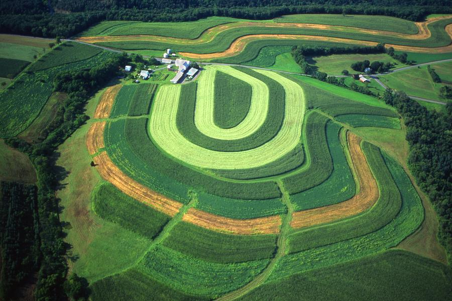
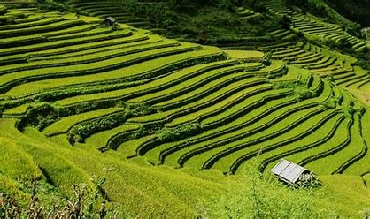
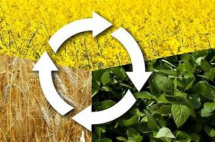
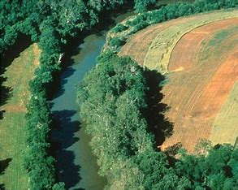
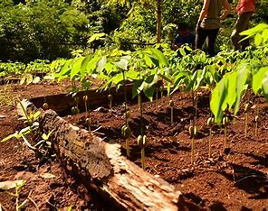
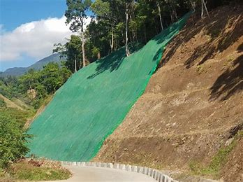
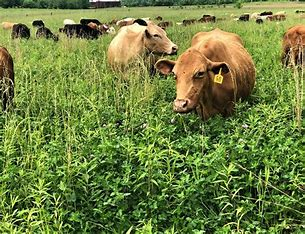
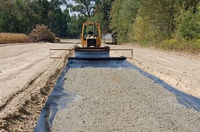

Contour Farming: Planting crops in curved rows along the contour of the land helps slow water runoff and promotes the retention of soil.
Terracing: Building terraces or steps into steep hillsides can reduce the speed of water flow, allowing soil to settle and preventing erosion. No-Till Farming: This method minimizes soil disturbance during planting and reduces erosion by leaving crop residue on the field.
No-Till Farming: This method minimizes soil disturbance during planting and reduces erosion by leaving crop residue on the field.
Crop Rotation: Alternating crops seasonally can improve soil health, increase root structure, and reduce erosion. Cover Crops: Planting cover crops, like grasses or legumes, during non-growing seasons can protect the soil from erosion and improve its structure.
Cover Crops: Planting cover crops, like grasses or legumes, during non-growing seasons can protect the soil from erosion and improve its structure.
Riparian Buffer Strips: Planting vegetation along water bodies can prevent bank erosion and filter out sediments and pollutants.
Reforestation: Restoring or planting forests helps hold soil in place with tree roots, reducing erosion. Grassed Waterways: Establishing grassed channels in areas with concentrated water flow can slow and filter runoff.
Grassed Waterways: Establishing grassed channels in areas with concentrated water flow can slow and filter runoff. Silt Fences: Installing silt fences or sediment basins can trap soil and sediment carried by water.
Silt Fences: Installing silt fences or sediment basins can trap soil and sediment carried by water.
Erosion Control Matting: Using erosion control matting on slopes or construction sites helps stabilize the soil and prevent erosion.
Proper Grazing Management: Implementing rotational grazing and managing livestock access to sensitive areas can reduce soil disturbance. Conservation Tillage: Reducing the intensity of tilling and plowing helps protect the soil structure and reduce erosion.
Conservation Tillage: Reducing the intensity of tilling and plowing helps protect the soil structure and reduce erosion.
Soil Stabilizers: Applying soil stabilizers like polymers or binders can protect exposed soil surfaces from erosion.
You can also watch this video to know more about preventions of soil erosion Click here...